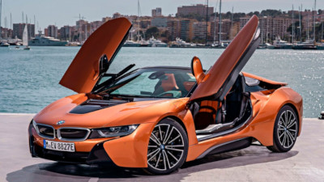
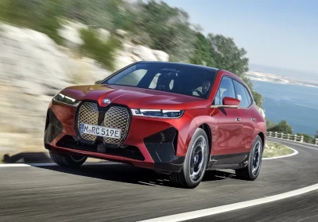
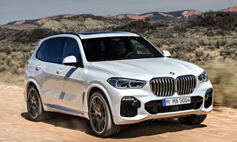

BMW FUNDAÇÃO
A BMW, que significa Bayerische Motoren Werke, foi fundada no dia 7 de março de 1916, na Alemanha. A companhia, hoje conhecida pelos automóveis e motocicletas de luxo, tem sua origem marcada pela fusão de duas fabricantes de motores de avião: A Rapp Motorenwerke e a Gustav Otto Flugmaschinfabrik. Saiba mais em https://canaltech.com.br/empresa/bmw/
BMW I4 M50

A corrida pelos carros elétricos ganha cada vez mais participantes. Afinal, muitos países estão mudando suas legislações para abolirem os veículos que utilizam combustíveis fósseis. Um dos carros elétricos mais recentes dentro da BMW é o i4. Baseado no Série 4 Gran Coupé, o BMW i4 foi apresentado para o grande público em junho de 2021. As entregas do modelo no mercado europeu começaram no último mês de novembro.
BMW I8
A linha BMW i8 2020 foi a última do superesportivo híbrido com motores a combustão e elétrico e, por conta disso, é também uma das mais procuradas. Em produção desde 2014, o modelo ano 2020 recebeu reestilização e novos equipamentos. Além da típica versão coupé, havia também o BMW i8 2020 conversível, denominado Roadster. Na época, o único conversível híbrido do Brasil. O toque de um botão é suficiente para abrir ou fechar o teto de lona preta, o que leva apenas 15 segundos e pode ser feito com o carro a até até 50 km/h.
BMW IX
Primeiro, uma breve retrospectiva para entender o posicionamento desse carro no mercado. Serão duas versões oferecidas aqui. A primeira, iX Drive 40 (R$ 654.950), tem dois motores elétricos (um em cada eixo) que geram 326 cv e 64,3 kgfm, além de autonomia de 425 km. Já a de topo iX 50 Sport (R$ 799.950) também tem dois motores elétricos (ou seja, em ambas a tração é integral) de 523 cv e 78 kgfm e pode rodar ótimos 630 km com uma carga da bateria a maior autonomia entre os veículos elétricos disponíveis hoje no país.
BMW M3 COMPETITION

BMW M3 Competition demonstra como se pode usufruir do automobilismo com um BMW Série 3 Sedan. A versão topo de linha do BMW Série 3, Linha M, apresenta um motor a gasolina BMW M TwinPower Turbo de 6 cilindros em linha, com 510 cv e diversas tecnologias de chassis adaptadas do automobilismo. As proporções robustas e o design em três porções reforçam visualmente a natureza esportiva do veículo. Elementos expressivos do design da Linha M, tais como o teto em carbOono ou as soleiras das portas estendidas, em preto, definem detalhes do automobilismo em destaque no exterior do carro. Com os diversos elementos M, o interior do BMW M3 Competition Sedan apresenta uma aparência esportiva e também elegante, consistentemente voltada para as necessidades do motorista.
BMW X5
O BMW X5 é uma espécie de precursor dos modelos X da marca de Munique. Na sequencia vieram X1, X3, X4, X6 e, finalmente, o X2. Pouco antes do vigésimo aniversário chega agora o novo X5 em novembro de 2018 para os concessionários: A quarta geração (designação interna G05) é de 4,92 metros e 9,2 cm mais longa, e com 2 metros de largura, é quase 17 cm mais larga que antecessor. Além disso, a aparência do grande SUV foi cuidadosamente revisada. As lanternas traseiras LED padrão tornaram-se muito mais estreitas em comparação com o antecessor internamente F15 e agora lembram o BMW X4. Significativamente mais foi feito no capítulo sobre sistemas de assistência e conectividade. Assim, o X5 é o primeiro BMW com o novo, totalmente digital "Live Cockpit Professional", e os sistemas de assistência ao motorista também aumentaram a sofisticação do modelo. No lançamento de mercado, em novembro de 2018, o X5, que continua a ser construído nos EUA, contará com três motores. O motor de nível de entrada é o X5 xDrive30d com agora 265 cv (anteriormente 258 cv), seguido pela única unidade gasolina X5 xDrive40i com 340 cv e o modelo de topo provisório X5 M50d com mild hibrido de 400 cv.